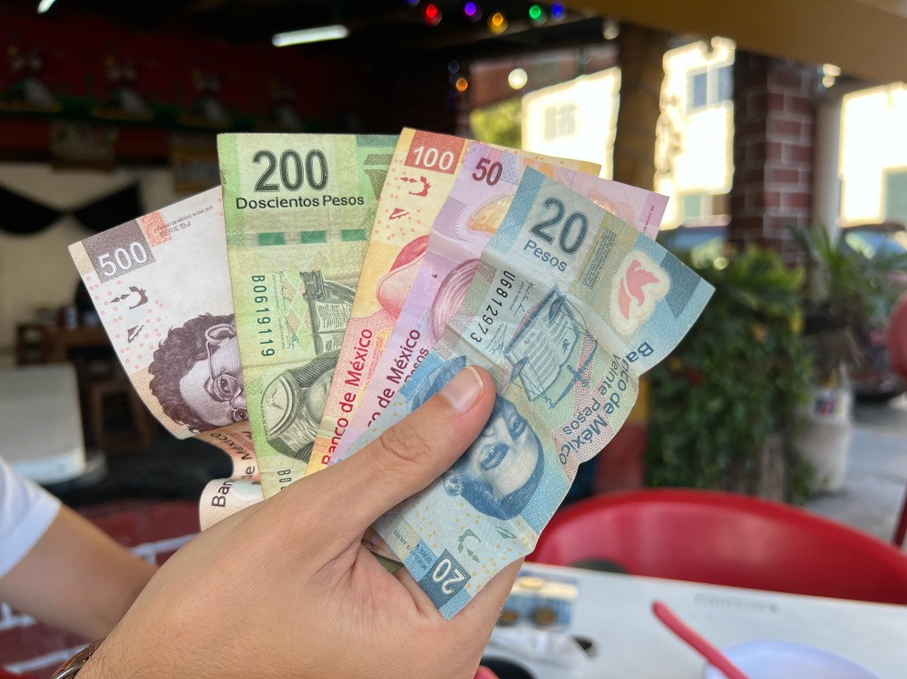

Destinations you must visit
A variety of destinations for you to visit Mexico according to your preferences.
Read Destinations

A variety of destinations for you to visit Mexico according to your preferences.
Read Destinations

Mexico has a variety of transport for you to move around the cities with ease, such as metro stations, taxis (they are cheaper in some places), motorcycle taxis and buses. However, you have to be very careful in public transport due to pickpockets in them, just try to have all your belongings well kept and out of your back pockets.

Always keep some cash with you when you travel to Mexico, because most of the street markets that are very common here do not accept card payments. In contrast, if you want a more urban-like tourism, card is accepted in almost every shopping center or touristic place.

Even though places like Cancún are beautiful, we recommend you to avoid touristic common stores or beaches due to the prices huge increment for tourists and possible scams of street vendors. If you would not mind to spend a little more to stay in this touristic places, there is no problem, but if you are searching for a more budget-friendly trip, there are ecological reserves that lower their prices in exchage of rules applied to tourists as "no food allowed" and "take a shower before entering"; a really good choice for a calm trip.

You shoukd also think what kind of weather would you like to experience. Mexico has a wide variety of weather, so it is recommended for you to check in what season you would like to visit this country and where you would like to stay: beaches and northern/southern cities have a warmer weather, while central cities have a colder weather. Similarly, in winter, the weather is colder generally but warmth is still felt in beaches, but in summer, temperatures can reach up to 40°C in beaches, but can feel better in commonly cold places such as Puebla or Mexico State.

There are various places you could visit in Jalisco. However, we recommend you two cities in particular: Puerto Vallarta and Guadalajara. Puerto Vallarta is one of the most common and favorite places to visit for tourists because of its clear waters and diverse activities to do there, such as watching baby turtles, hiking, daily tours to hidden beaches and even more, without being too expensive. In comparison, Guadalajara is the capital of Jalisco, bringing.....

Huasca de Ocampo/ Peña del Aire aa.

City center/ coyoacan/ teotihuacan aa.

Playa el cielo/ Reserva Ecológica de Akumal aa.

aaa.

aa.

aa.

aa.
In this video, there are other suggestions on where to go and it is categorized seasonally.

aa.